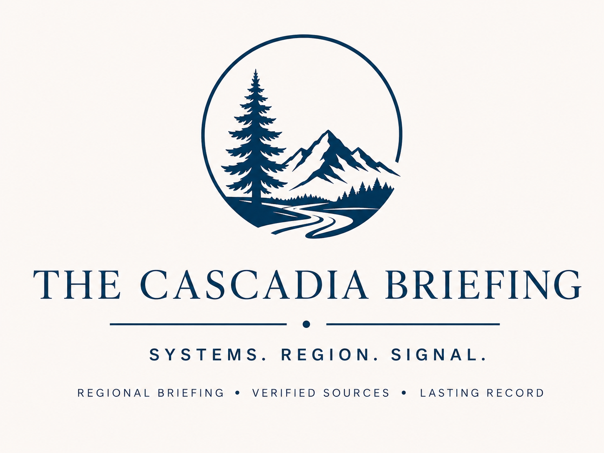

Power Outage
This source was flagged as a public safety signal for Oregon based on its title and source metadata.
Why it matters: In Oregon, Public systems signals can affect public services, local planning, and regional resilience.

Weekly briefing / Mar 30–Apr 5, 2026 / Coverage: 2026-03-30 through 2026-04-05
Run date: 2026-05-21
The Cascadia Briefing
The Cascadia Briefing is a weekly, source-backed regional briefing for Washington, Oregon, and Idaho, tracking public systems, infrastructure, health, safety, environment, economy, and resilience.
Cascadia Signal Pack
Detailed downloadable records are being prepared for future release.
Open this week's interactive map | Open this week's source table | Open latest Cascadia map
This source was flagged as a public safety signal for Oregon based on its title and source metadata.
Why it matters: In Oregon, Public systems signals can affect public services, local planning, and regional resilience.
This source was flagged as a public safety signal for Oregon based on its title and source metadata.
Why it matters: In Oregon, Environmental and climate signals can affect public safety, infrastructure planning, and regional resilience.
This source was flagged as a public safety signal for Washington based on its title and source metadata.
Why it matters: In Washington, Health system signals can affect access to care, public services, and community resilience.
This source was flagged as a public safety signal for Washington based on its title and source metadata.
Why it matters: In Washington, Transportation signals can affect mobility, emergency access, freight movement, and infrastructure maintenance.
This source was flagged as a public safety signal for Washington based on its title and source metadata.
Why it matters: In Washington, Public safety signals can affect emergency response, household stability, and local service coordination.
This source was flagged as a public safety signal for Oregon based on its title and source metadata.
Why it matters: In Oregon, Public safety signals can affect emergency response, household stability, and local service coordination.
This source was flagged as a transportation signal for Washington based on its title and source metadata.
Why it matters: In Washington, Transportation signals can affect mobility, emergency access, freight movement, and infrastructure maintenance.